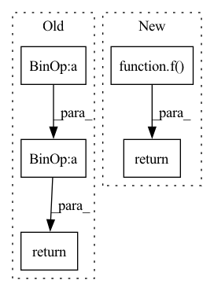

Pattern ID :908

Before Change
if beta * x > threshold:
return x
return jnp.log(1. + jnp.exp(beta * x)) / beta
def softmax(x):
After Change
:rtype: jax.array
f = vmap(_softplus)
return f(x)
def _softmax(x):
Applies the softmax function element-wise.
In pattern: SUPERPATTERN
Frequency: 3
Non-data size: 5
Instances
Fragment ID: 4409891
Project Name: dssc-projects/veni
Commit Name: ad26372faa6eec17671c9856ff18c2e82c979cb3
Time: 2022-05-08
Author: 93731561+dario-coscia@users.noreply.github.com
File Name: jax_forward/functional.py
M Class Name: AnonimousClass
N Class Name: AnonimousClass
M Method Name: softplus(1)
N Method Name: softplus(3)
M Parent Class:
N Parent Class:
M File Name: jax_forward/functional.py
N File Name: jax_forward/functional.py
M Start Line: 61
M End Line: 82
N Start Line: 136
N End Line: 152
'>
Before Change
:return: sigmoid on x
:rtype: jax.array
return jnp.exp(x) / (jnp.exp(x) + 1.)
def log_sigmoid(x):
After Change
:rtype: jax.array
f = vmap(_sigmoid)
return f(x)
def log_sigmoid(x):
Applies the logarithmic sigmoid function element-wise
'>
Fragment ID: 4409895
Project Name: dssc-projects/veni
Commit Name: ad26372faa6eec17671c9856ff18c2e82c979cb3
Time: 2022-05-08
Author: 93731561+dario-coscia@users.noreply.github.com
File Name: jax_forward/functional.py
M Class Name: AnonimousClass
N Class Name: AnonimousClass
M Method Name: sigmoid(1)
N Method Name: sigmoid(1)
M Parent Class:
N Parent Class:
M File Name: jax_forward/functional.py
N File Name: jax_forward/functional.py
M Start Line: 47
M End Line: 47
N Start Line: 97
N End Line: 98
'>
Before Change
:return: leaky rectified linear unit on x
:rtype: jax.array
return jnp.maximum(0, x) + negative_slope * jnp.minimum(0, x)
def tanh(x):
After Change
:rtype: jax.array
f = vmap(_leaky_relu)
return f(x)
def _tanh(x):
Applies the tanh function element-wise
'>
Fragment ID: 4409894
Project Name: dssc-projects/veni
Commit Name: ad26372faa6eec17671c9856ff18c2e82c979cb3
Time: 2022-05-08
Author: 93731561+dario-coscia@users.noreply.github.com
File Name: jax_forward/functional.py
M Class Name: AnonimousClass
N Class Name: AnonimousClass
M Method Name: leaky_relu(1)
N Method Name: leaky_relu(2)
M Parent Class:
N Parent Class:
M File Name: jax_forward/functional.py
N File Name: jax_forward/functional.py
M Start Line: 15
M End Line: 25
N Start Line: 41
N End Line: 52